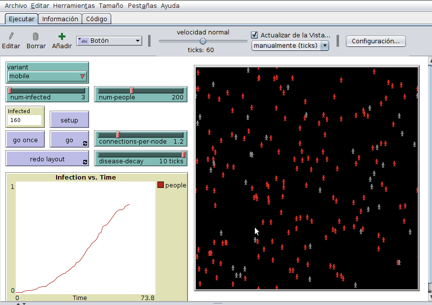
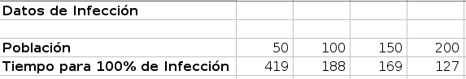
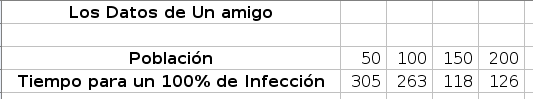
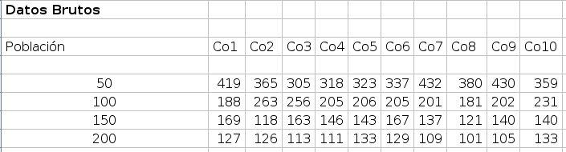
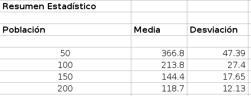

8 Analizando Modelos Basados en Agentes
8.1 Modelos e investigación
Cuando se habla de usar modelos en investigación, típicamente queremos usar un modelo para obtener entendimiento de una pregunta específica de investigación. Construir una buena pregunta de investigación es uno de los aspectos más difíciles en el ciclo de modelaje. Una manera común de hacerlo es comenzar con algo de teoría y definir que pregunta puede ser contestada con el modelo basado en agentes,una pregunta como:
- ¿Por qué no más personas usan los carros eléctricos?
es difícil de contestar con un modelo basado en agentes ya que es una pregunta empírica para lo cual lo mejor es realizar sondeos y encuestas con compradores potenciales de carros. Sin embargo podríamos formular una pregunta como:
- ¿ Basados en nuestro entendimiento del comportamiento de los consumidores y en las tendencias de ventas de carros, cuáles pueden ser las proyecciones de ventas de carros eléctricos hacia el futuro?
Esta pregunta puede ser abordada por una variedad de modelos incluyendo modelos estadísticos.Una pregunta más enfocada a la metodología de los MOBAs podría enfocarse en el rol de la influencia social y la estructura de las redes sociales, asumiendo que se tienen datos relevantes de este aspecto. ¿Cuáles son las estrategias que podrían ayudar a la formulación de una pregunta de investigación apropiada?
Una es leer publicaciones de implementación de modelos basados en agentes en el área de interés y ver que tipo de preguntas se tratan de resolver. Buenas preguntas de investigación quen usan MOBAs se concentran en como diferentes mecanismos que afectan el comportamiento de agentes y su entorno impactan los resultados que se quieren investigar. Esto no sorprende ya que los modelos basados en agentes funcionan de esa manera.Una vez se define la pregunta de investigación, se pueden definir hipótesis, que ayudan a formular que resultados hay que investigar y que mecanismos incluir en el modelo, por ejemplo:
*¿ Es la discriminación racial la única causa para la segregación?
Para probar esto podriamos derivar la segregación en un agente donde los agentes son “felices” si la mayoría de sus vecinos lo son. El modelo de Schelling demuestra que la segregación solo sucede si los agentes se sienten bien viviendo en vecindarios donde la mayoría es diferente a ellos. Una vez tenemos una idea clara de las preguntas de investigación, podemos comenzar a trabajar en el modelo, también es útil mirar publicaciones de trabajos sobre modelos parecidos. De hecho, es conveniente replicar uno o varios de estos modelos para tener un amejor idea de como funcionan estos tipos de modelos y que retos y desafíos han tenido sus autores. No es inusual que los que construyen modelos sean sobre-optimistas en sus ambiciones, entonces observar estos modelos alternativos ayuda a ser más realista sobre el alcance de este tipo de modelos. Un aspecto importante al construir un modelo MOBA, como ya se ha mencionado, es construirlo de la manera más simple posible, pero no tan simple. Esto es más fácil decirlo que hacerlo, De hecho, modelos simples son difíciles y dispendiosos de construir mientras que modelos complicados son más fáciles de crear. Modelos simples, que capturan la esencia de un tema de interés son el resultado de mucha iteraciones y ensayos con el modelo, el modelaje es un arte, como crear una escultura o una pintura, en donde el producto final termina siendo unos pocos brochazos que muestran la esencia de la obra de arte.
8.2 Herramientas básicas
Use diagramas de flujo para establecer conexiones entre los diferentes componentes de un modelo:
- ¿Cuáles son los procesos de retroalimentación?
- ¿Cuáles son las escalas espaciales y temporales?
- ¿Qúe tipo de agnetes incluir y cuales son sus interacciones?
Sabiendo que el modelaje es un proceso, no demore todo su tiempo diseñando el modelo. El replicar otros modelos relacionados ayuda a no comenzar de ceros. Implemente sus primeras ideas y encontrará que sus ideas son menos brillantes de lo que pensaba. El proceso de modelación y el observar los resultados de las supocisones del modelo, es un proceso de aprendizaje que le ayudará a redefinir la estructura del modelo. Una vez se tiene una versión inicial del modelo, haga un análisis adecuado. Se dará cuenta que se utilizará mucho más tiempo en el análisis que en la construcción del modelo, explore condiciones extremas del modelo y pruebe si el modleo todavía produce resultados relevantes. Cuando empieze a tener confianza en el funcionamiento del modelo puede comenzar a hacer un análisis más formal. Un análisis básico puede ser un análisis de sensibilidad donde se varían los parametros del modelo de manera sistemática. Puede comenzar a variar los parámetros uno a uno para identificar que parámetros impactan de mayor manera los resultados, luego varíe dos parámetros y obseve su covariación, el análisis de sensibilidad le ayudará a entender mejor el modelo y puede producir que se generen modificaciones al modelo e inclusive a reconsiderar la pregunta inicial que dió origen al modelo. Con datos cualitativos se puede construir unmodelo cuantitativo, como las feromonas impactan el movimiento de las hormigas, como se forman caminos de hormigas, como los patrones de vuelos de aves se forman,etc…si se tiene información cuantitativa,esta se puede usar para definir valores de los parámetros del modelo y también se puede usar para evaluar el modelo, acá entramos en el importante tema de la calibración de un modelo que veremos maś adelante. Cuando se hace un análisis sistemático de un modelo hay que ser crítico acerca del modelo, desconfie de los resultados del modelo y preguntese siempre por qué se dan estos resultados, sobre todos si estos no son obvios ni intuitivos, es frecuente sorprenderse con algunos resultados del modelo, pero al final se debería entender porque los resultados a lalarga resultan no ser tan sorprendentes. Durante el proceso de implementación del modelo, es una buena práctica comenzar a documentarlo. La buena documentación de un modelo basado en agentes no es fácil de obtener ya que estos modelos van más alla de un conjunto de ecuaciones. Un protocolo quen puede ayudar a obtener una buena y sistematica documentación es elprotocolo ODD (ODD protocol) Cuando se tenga el modelo documentado, puede guardar su modelo y su documentación. Un repositorio recomendado es la Libreria de modelos computacionales COMSES NET, Guardar su modelo en la nube ayuda a otros a construir sobre su trabajo y se asegura que hacia el futuro lam documentación no se pierda. Finalmente, ¿Qué se aprende del proceso de modelado? Se pensará que ya no se necesita modelar más cuando ya se tiene un mejor entendimiento del problema, pero siempre es posible mejorar un modelo y aprender de el, cuando vaya a comunicar los resultados de su trabajo y escriba, por ejemplo, un artículo de investigación, haga énfasis en las preguntas de investigación y enfoque la discusión en el análisis del modelo y en como este responde a las preguntas. No tiene que incluir todos los detalles en el artículo, mueva los detalles técnicos a un apéndice
8.3 Un Ejemplo de Análisis
Si alguien se resfría y está tosiendo , podría infectar a otros. Los que entran en contacto con él, sus amigos, compañeros de trabajo e incluso extraños, pueden atrapar la gripa. Si un virus del resfriado infecta a alguien, esa persona podría transmitir esa enfermedad a otras cinco personas (seis ahora infectadas) A su vez, esas otras cinco personas podrían extenderse el resfriado a cinco personas más cada uno (treinta y uno ahora están infectados), y esos veinticinco las personas pueden propagar el resfriado a cinco personas adicionales (ciento cincuenta y seis personas son ahora infectado). De hecho, la tasa de infección inicialmente aumenta exponencialmente. Sin embargo, dado que este recuento de infecciones crece tan rápido, cualquier población eventualmente alcanzará el límite de la cantidad de personas que pueden infectarse. Por ejemplo, imagine que las 156 personas mencionadas anteriormente trabajan para la misma compañía de 200 personas. Este modelo simple supone que cada persona infecta el mismo número de personas, lo que evidentemente no es el caso en contextos reales. A medida que una persona se mueve en su espacio de trabajo, podría ser el caso de que, por casualidad, no vean a muchas personas en un día, mientras que otra persona puede ver a muchas personas. Además, nuestra descripción inicial suponeque si una persona infecta a cinco personas y otra persona infecta a cinco, no habrá superposición. En realidad, es probable que haya una superposición sustancial. Por lo tanto, la propagación de la enfermedad en un lugar de trabajo no es tan sencillo como sugiere nuestra descripción inicial. Supongamos que estamos interesados en comprender la propagación de la enfermedad, y queremos construir un MOBA de la propagación.¿Cómo deberíamos hacerlo? Primero, necesitamos algunos agentes que hagan un seguimiento de si están infectados con un resfriado o no. Además, estos agentes necesitan una ubicación en el espacio y la capacidad de moverse. Finalmente, necesitamos la capacidad de inicializar el modelo infectando a un grupo de individuos. Ese es exactamente cómo se comporta el modelo de NetLogo que discutiremos en otro capítulo del libro (capítulo ??) :

Las personas se mueven aleatoriamente en un paisaje e infectan a otras personascada vez que entran en contacto con ellos. Aunque este modelo es simple, exhibe un comportamiento interesante y complejo. Por ejemplo:
- ¿Qué sucede si aumentamos el número de personas en el modelo? ¿Se propaga la enfermedad?más rápido en toda la población, o ¿lleva más tiempo porque hay más personas?
Podemos simular el modelo con poblaciones de 50, 100, 150 y 200, y examinar los resultados. Mantendremos constante el tamaño del mundo, de modo que, a medida que aumentemos el número de individuos, también estamos aumentando la densidad de población. En el proceso anotaremos el tiempo para que se infecte toda la población :
Con base en estos resultados, concluimos que a medida que aumenta la densidad de población, el tiempo para la infección completa disminuye drásticamente.Esto tiene sentido, al comienzo cuando la primera persona se infecta, si no hay muchas otras personas alrededor, la persona no tiene a nadie a quien infectar y, por lo tanto, la infección aumenta lentamente.Sin embargo, si hay muchas personas alrededor, habrá muchas oportunidades de infección. Al final, cuando solo hay uno o dos agentes no infectados,será más probable que la infectemos si la población de infectados es alta

Supongamos que mostramos estos datos a un amigo nuestro y el no lo cree.El cree que el tiempo de infección al 100 por ciento debería crecer linealmente con la población. Después de eso, corre el modelo y recopila los mismos datos que hicimos. Sus datos están en la siguiente tabla:

Estos resultados no respaldan la predicción de nuestro amigo de que el tiempo hasta el 100 por ciento de infección crecerá a medida que aumente la población, pero, por otro lado, son bastante diferentes a los resultados que fueron recolectados originalmente. De hecho, el tiempo hasta el 100 por ciento de infección para 150 y 200 aumenta en los datos de nuestro amigo, aparentemente contradiciendo nuestros resultados originales. Si ejecutamos el modelo varias veces más, es posible que nuevamente se obtengan resultados diferentes.Necesitamos entonces determinar si hay tendencias en los datos. Los datos son inconsistentes porque la mayoría de los modelos MOBA usan aleatoriedad, cómo se mueven los agentes alrededor del paisaje no se determina específicamente, sino que es un movimiento azaroso. Claramente, entonces, un conjunto de corridas del modelo no es suficiente para caracterizar el comportamiento de este modelo. Supongamos, entonces, que recopilamos datos para diez corridas diferentes del modelo como en la siguiente tabla:

Aunque la mayoría de las corridas, se parece a nuestros resultados originales que a los del amigo, puede ser difícil ver tendencias claras. Por lo tanto, para describir estos patrones de comportamiento tiene sentido recurrir a algunas estadísticas.
8.3.1 Análisis estadístico de ABM: ( más allá de los datos)
Los resultados estadísticos son la forma más común de ver cualquier tipo de información científica, si se trata de modelos computacionales, experimentos físicos, encuestas sociológicas u otros métodos que generan datos. La metodología general detrás de la estadística descriptiva es proporcionar medidas numéricas que resuman un gran conjunto de datos y describan el conjunto de datos de tal manera que no seqa necesario examinar cada valor individual. Por ejemplo, supongamos que estamos interesados en determinar si una moneda es justa (es decir, es tan probable que salga cara) como sello), podemos realizar una serie de experimentos donde lanzamos la moneda y observamos los resultados. Una forma de determinar si la moneda es justa sería simplemente examinar todas las observaciones: CCCCSSCSSS y determinar si la moneda era justa o no. Sin embargo, si quisiéramos examinar mil, diez mil, o incluso un millón de tales observaciones, tomaría demasiado tiempo examinarlos todos. Una mejor manera es simplemente contar la frecuencia con la que se produce una cara, es decir, la probabilidad observada de éxito y la desviación estándar de este probabilidad observada.Es mucho más fácil ver los promedios y las desviaciones estándar al examinar grandes series de datos (por ejemplo, para CCCCSSCSSS, la probabilidad observada es 0.5, y el resultado esperado para diez ensayos es observar cinco cabezas con una desviación estándar de 1,58). Para aplicar esta técnica a nuestro modelo de propagación de enfermedades , podemos crear estadísticas resumidas de los resultados de la tabla anterior que mostramos en la siguiente tabla:

A partir de estos resultados resumidos, vemos que el tiempo medio de infección al 100%, disminuye a medida que aumenta la densidad de población. Otro resultado interesante es que a medida que la población (la densidad) aumenta, la desviación estándar disminuye. Esto significa que los datos son menos variados, en otras palabras, más pruebas están cerca de la media que lejos de ella. Esto pasa
porque cuando hay pocos agentes, existe la posibilidad de que los individuos no se encuentren entre sí para transmitir la enfermedad durante bastante tiempo, pero cuando hay una alta densidad
de individuos, hay menos probabilidad de que esto ocurra, lo que significa que el tiempo hasta 100% de infeccióm permanece más cerca del tiempo promedio
Estos resultados parecen confirmar nuestra hipótesis original de que a medida que aumenta la densidad de población el tiempo medio de infección disminuye. El análisis estadístico es un método común de confirmar o rechazar hipótesis. Al examinar inicialmente un MOBA, podemos comenzar por explorar el espacio de posibilidades (el espacio de parámetros). Diseñando un experimento como el anterior, y analizando los resultados es cómo comenzamos a confirmar o rechazar estas hipótesis.Los MOBAs crean grandes cantidades de datos (el modelo de propagación de la enfermedad es solo un pequeño ejemplo), y si podemos resumir estos datos podemos examinar grandes cantidades de resultados de manera eficiente.Numerosas herramientas fácilmente disponibles pueden facilitar la realización de análisis estadísticos. por ejemplo, Microsoft Excel, el paquete R de código abierto, SAS, Mathematica y Matlab, todos tienen paquetes y conjuntos de funciones que ayudan en el análisis de grandes conjuntos de datos.
Netlogo tiene una poderosa herramienta para generar experimentos llamado Analizador de Comportamiento (BehaviorSpace),(ver C.1) que miraremos en capítulos posteriores